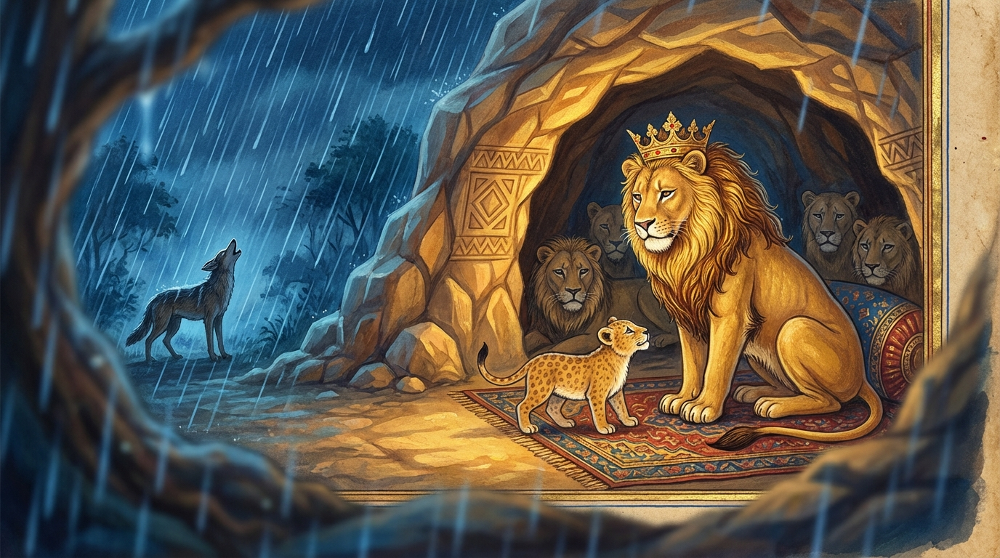

2. දද්දර ජාතකය (172)
“කො නු සද්දෙන” යන මේ දේශනාව බුදුරජාණන් වහන්සේ ජේතවනාරාමයෙහි වැඩවාසය කරන සමයෙහි කෝකාලික භික්ෂුව මුල් කරගෙන වදාළ සේක. එකල බොහෝ ඇසූ පිරූ තැන් ඇති (බහුශ්රැත) භික්ෂූහු, රතු සිරියල් තලාවක නාද කරන තරුණ සිංහයන් මෙන් ද, අහස් ගඟ පොළොවට බස්වන්නාක් මෙන් ද සංඝයා මැද මිහිරි ස්වරයෙන් බණ (සරභාණ) කියති. ඒ භික්ෂූන් සරභාණ කියන කල්හි කෝකාලික භික්ෂුව තමාගේ හිස් බව නොදැන, “මම ද සරභාණ කියන්නෙමි”යි භික්ෂූන් අතරට වැදී, “අපට සරභාණ කීමට අවස්ථාවක් නොදෙති. ඉදින් අපටත් අවස්ථාවක් දෙන්නේ නම් අපිත් කියන්නෙමු”යි භික්ෂු සංඝයාගේ අවසරය නොගෙනම ඒ ඒ තැන කියමින් ඇවිදියි. ඔහුගේ ඒ කථාව භික්ෂු සංඝයා අතර ප්රකට විය. භික්ෂූහු “මොහු විමසා බලමු” යන අදහසින්, “ඇවැත්නි කෝකාලික, අද සංඝයාට සරභාණ දේශනාව කරන්න”යි කීහ. ඔහු තමාගේ තරම නොදැනම “යහපතැ”යි පිළිගෙන, “අද සරභාණ කියන්නෙමි”යි තමාට යෝග්ය කැඳ බී, කැවිලි කා, හිතකර වූ හොද්දෙන් බත් අනුභව කළේය.
හිරු බැස ගිය පසු “බණ ඇසීමට මේ වේලාව යැ”යි ඝෝෂා කළ (දැන්වූ) කල්හි භික්ෂු සංඝයා රැස්වූහ. හෙතෙම කටු කරඬු මල් පැහැති අඳන සිවුරක් ඇඳ, කිණිහිරි මල් පැහැති පොරොවන සිවුරක් පොරවාගෙන සංඝයා මැදට පිවිස, තෙරුන් වහන්සේලාට වැඳ, අලංකාර කළ රුවන් මණ්ඩපයෙහි පනවන ලද උතුම් ධර්මාසනයට නැග, විචිත්ර වූ විජිනිපත ගෙන “සරභාණ කියන්නෙමි”යි හිඳ ගත්තේය. එකෙණෙහි ඔහුගේ ශරීරයෙන් දහඩිය ගලා ගියේය. ලජ්ජාවට පත්විය. පළමු ගාථාවෙහි මුල් පදය කියා ඊළඟ පදය මතක් කරගත නොහැකි විය. හෙතෙම වෙවුලමින් ධර්මාසනයෙන් බැස ලජ්ජාවෙන් සංඝයා මැදින් ඉවත්ව තමාගේ පන්සලට ගියේය. වෙනත් බහුශ්රැත භික්ෂුවක් සරභාණ දේශනා කළේය. එතැන් පටන් භික්ෂූහු ඔහුගේ හිස් බව දැන ගත්හ. ඉක්බිති එක් දිනක් භික්ෂූහු දම්සභාවේදී කථාවක් පටන් ගත්හ: “ඇවැත්නි, මුලදී කෝකාලිකගේ හිස්බව දැනගැනීම අපහසු විය. දැන් වනාහි මොහු විසින්ම නාද කොට තමාගේ ස්වභාවය ප්රකට කරන ලදී” යනුවෙනි. බුදුරජාණන් වහන්සේ එහි වැඩම කොට, “මහණෙනි, මා එන්නට පෙර නුඹලා කවර කථාවකින් යුක්තව සිටියහුදැ”යි විමසා, කාරණය දැනගත් පසු, “මහණෙනි, කෝකාලික නාද කොට ප්රකට වූයේ දැන් පමණක් නොවේ, පෙරත් නාද කොට ප්රකට වූයේ ය”යි වදාරා අතීත කථාව ගෙනහැර දැක්වූ සේක.
අතීතයෙහි බරණැස් නුවර බ්රහ්මදත්ත රජු රාජ්ය කරන කල්හි බෝධිසත්වයන් වහන්සේ හිමාලය වනයෙහි සිංහ යෝනියෙහි ඉපිද බොහෝ සිංහයන්ට රජ විය. හෙතෙම නොයෙක් සිංහයන් පිරිවරාගෙන රිදී ගුහාවක වාසය කළේය. ඒ අසල එක්තරා ගුහාවක එක් හිවලෙක් ද වාසය කරයි. ඉක්බිති දිනක් වැස්ස වැස නතර වූ පසු සියලු සිංහයෝ සිංහරාජයාගේ ගුහා දොරටුව ළඟට රැස්වී සිංහනාද පවත්වමින් සිංහ ක්රීඩා කළහ. ඔවුන් එසේ නාද කොට සෙල්ලම් කරන අතරතුර ඒ හිවලා ද නාද කළේය. සිංහයෝ හිවලාගේ හඬ අසා “මේ හිවලාත් අප සමග නාද කරන්නේ ය”යි ලජ්ජාවට පත්ව නිහඬ වූහ. සිංහයන් නිහඬ වූ කල්හි බෝසත් සිංහයාගේ පුත් වූ සිංහ පැටවා, “පියාණෙනි, මේ සිංහයෝ නාද පවත්වමින් සිංහ ක්රීඩා කරමින් සිටියදී එකකුගේ හඬ අසා ලජ්ජාවෙන් නිහඬ වූහ. තමාගේ හඬින් තමා කවුරුන්දැයි හඟවන මොහු කවරෙක්දැ”යි පියාගෙන් විමසමින් පළමු ගාථාව කීවේය.
“මෘගරාජය, කවරෙක් නම් මහත් වූ ශබ්දයෙන් මේ දද්දර පර්වතය ගුගුරුවයි ද? ඇයි සිංහයෝ ඔහුට පෙරළා නාද නොකරන්නේ? මේ තෙමේ කවරෙක් ද?”
යනුවෙන් පළමු ගාථාව කීවේය.
එහි අභිනාදෙති දද්දරං යනු දද්දර නම් රිදී පර්වතය එකම නාදයක් කරයි. මිගාධිභූ යනු පියාට අමතන වචනයයි. මෙහි අර්ථය නම්: “සිංහයන්ට ජ්යෙෂ්ඨ වූ, සිංහ රාජ වූ පියාණෙනි, ඒ කවරෙක්දැයි ඔබෙන් විමසමි” යන්නයි.
ඉක්බිති ඔහුගේ වචනය අසා පියා දෙවන ගාථාව කීවේය:

“දරුව, මේ හඬන්නේ මෘග ජාතීන් අතර අධම වූ හිවලෙකි. මොහුගේ ජාතිය පිළිකුල් කරමින් සිංහයෝ නිහඬව සිටිති.”
යනුවෙන් ගාථාව කීවේය.
එහි සමච්චරෙ යන්නෙහි ‘සං’ යනු උපසර්ග මාත්රයකි. නතර වෙති (අච්චන්ති) යන අර්ථයි. ‘නිහඬව හිඳිති’යි කියන ලද්දේ වෙයි. සමහර පොත්වල මෙය ‘සමච්ඡරෙ’ යනුවෙන් ද ලියති.
බුදුරජාණන් වහන්සේ, “මහණෙනි, කෝකාලික තමන්ගේ නාදයෙන් තමන්ව ප්රකට කර ගත්තේ දැන් පමණක් නොවේ, පෙරත් එසේම කළේය” යැයි වදාරා, මේ ධර්ම දේශනාව ගෙනහැර දක්වා ජාතකය සමාප්ත කළ සේක. “එකල හිවලා වූයේ මේ කෝකාලිකය. සිංහ පැටවා වූයේ රාහුල කුමරුය. සිංහ රාජයා වූයේ මම ම ය.”
දෙවන වූ දද්දර ජාතක වර්ණනාව නිමි.